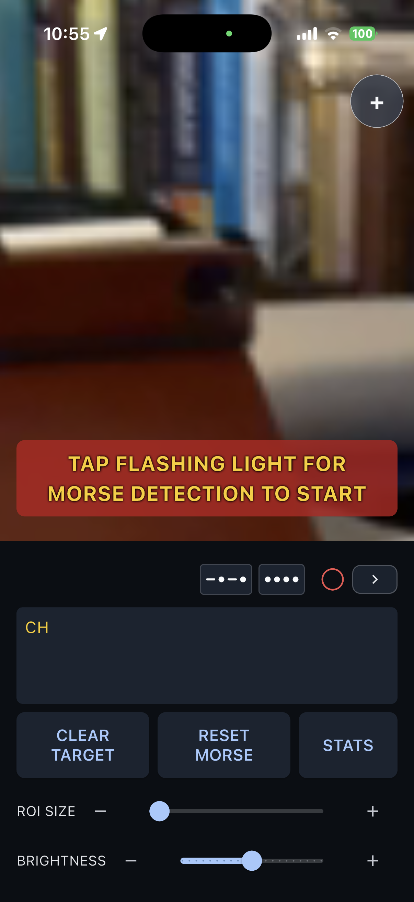
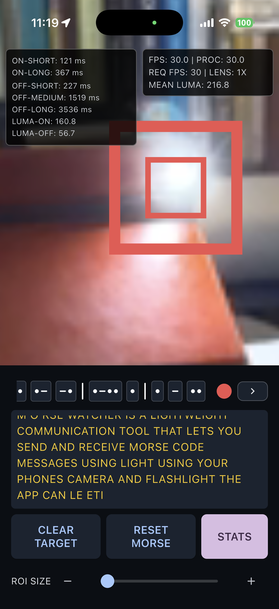
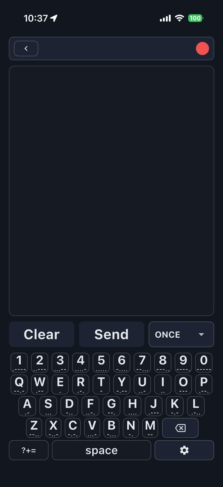
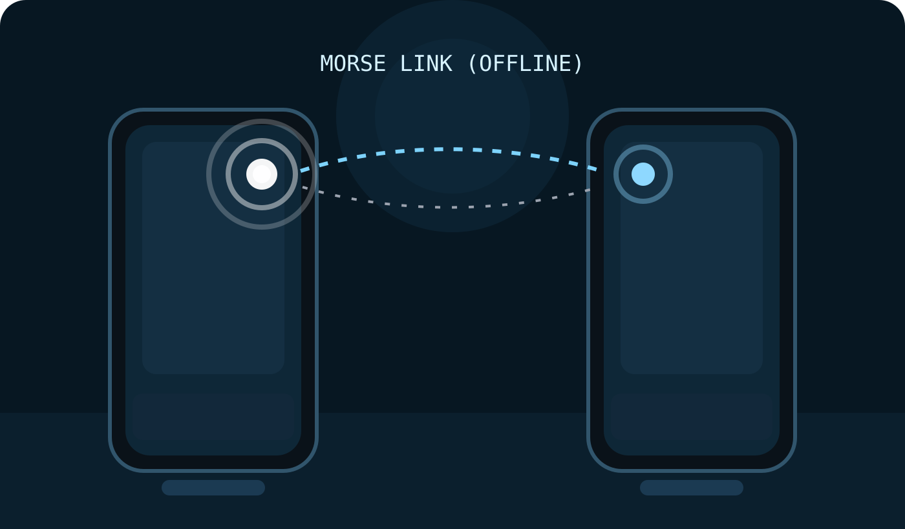

Tap screen to start
Start the detector view, choose the light you want to watch, and lock onto the right signal source while the app automatically calibrates timing and detection settings.
Optical Morse Detection
Morse Watcher helps you detect and decode Morse code from flashing lights using your iPhone camera.
Available now on the iOS App Store.
Background: Morse apparatus and alphabet, Library of Congress. [1877] | Knight, Edward H. (Edward Henry), 1824-1883. Illus. in T9 .K692 [General Collections] | LC-USZ62-110409
App Introduction

Start the detector view, choose the light you want to watch, and lock onto the right signal source while the app automatically calibrates timing and detection settings.

Once calibration is complete, Morse Watcher tracks the light in real time and converts the flashes into readable output.

The sender screen lets you compose a message, convert it into Morse timing, and transmit it with a controlled flashlight pulse.
Offline Communication
When phone signal drops and internet is unavailable, Morse Watcher helps you send and receive simple messages using flashlight pulses and camera detection.
Two phones on fixed ground can exchange Morse patterns with stable framing, controlled flashing, and visible decode feedback.

Contact
For support, release questions, or early interest, contact support@morsewatcher.com.
App Store: Morse Watcher on the App Store